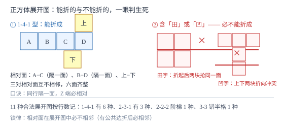

几何图形与展开图
立体图形住在我们周围，平面图形是它的影子；展开图把立体沿棱剪开摊平——会折会拆，立体感就长出来了。正方体的 11 种展开图、圆柱圆锥的展开，都是「面与体互相翻译」的基本功。
| 所属主题 | 图形的初步认识 |
|---|---|
| 所属模块 | 几何 |
| 课标学段 | 第四学段（7~9 年级） |
| 核心素养 | 空间观念几何直观 |
教材定位
人民教育出版社《人教版（2024版）义务教育教科书·数学》
七年级上册第6章 几何图形初步6.1 几何图形
对应七上 6.1 几何图形：立体图形与平面图形、展开与折叠、点线面体。本篇把正方体展开图的 11 种按行数分类记牢，并把「相对面不相邻」立为快速判据；圆柱圆锥的展开补在弧长扇形之前。
说明
有些几何图形的各部分不都在同一平面内，是立体图形，如长方体、正方体、圆柱、圆锥、球（圆柱、圆锥展开的细节九年级后面才学，这里提前借用）；有些各部分都在同一平面内，是平面图形，如线段、角、三角形、圆。立体图形与平面图形是互通的：从正面、侧面、上面看立体图形可得平面视图；把立体图形沿某些棱剪开摊平，可得它的展开图，反过来展开图也能折回立体。
长方体、正方体、圆柱、圆锥、球都有展开图（圆柱、圆锥九年级后面才学，这里提前借用）。正方体的展开图由 6 个同样大的正方形组成，共 11 种，按每行的方块数分四类：1-4-1 型 6 种（中间一排 4 个，上下各 1 个，上块与下块可动）；2-3-1 型 3 种；2-2-2 型 1 种（阶梯状）；3-3 型 1 种（两排各 3 个、错开两格相连，两排只共用中间一条边）。有一条铁律可以秒杀判断题：展开图中含「田」字（四个方块拼成 2× 2）或「凹」字结构的，必不能折成正方体。
圆柱的侧面展开图是长方形：长等于底面圆的周长 2π r，宽等于母线长（高）h，加上下两个圆组成全部展开图。圆锥的侧面展开图是扇形：扇形半径等于圆锥母线 l，扇形弧长等于底面圆周长 2π r，加上底面圆组成全部展开图。圆柱、圆锥、母线、扇形、弧长这些名词九年级后面才学，这里提前借用；到算弧长、侧面积时，这一对展开关系是计算的直接依据。
使用场景
包装盒设计是展开图最直接的应用：印刷厂印的是平面展开图，折起来才是盒子。判断展开图能否折成正方体、正方体折起后哪个面相邻，都是包装设计的真实问题。
中考正方体展开图题的典型问法：给出一个带图案的展开图，问折成正方体后图案的相对位置；或给四个图形选「能折成正方体的」。用「相对面不相邻」与「田凹排除法」可在三十秒内解决。
注意点
「相对面」在展开图中必不相邻（没有公共边、没有公共顶点才算稳妥的判据）：一行里隔一个面的两个面是相对面；「Z」字两端（紧邻的拐弯两端）也是相对面。
「凹」字型的展开图折不成正方体：凹进去的那一格会与中间一格重叠，同时缺一个面。判断题里见到凹字直接排除，不必逐面试折。
圆锥的侧面展开图是扇形不是三角形；圆柱的侧面展开图是长方形不是梯形。展开后多出「两个圆」或「一个圆」的分量，别漏画（圆锥、扇形九年级后面才学，这里提前借用）。
证明

图 1：判据两条——相对面在展开图中必不相邻；含「田」字或「凹」字结构的必不能折成正方体
证明
结论 1正方体展开图中「田」字与「凹」字结构必不存在。
田字（2× 2 四块）折起时：上面的两块各自绕中间横边折起后必然贴到同一侧面，即两块重叠，而正方体每个侧面只许一个面，重叠即失败；同时六块里有两块重叠就只剩 5 个不同朝向，必缺面。凹字（一行三块、中间下方挂一块再上方挂一块）：下方那一块折起后与上方块的折向冲突，两块抢占同一位置。两类结构用折的方向一推就露馅，无需逐种试——这就是判断题里「见田凹就排除」的依据。
关键一步依据是折起后每个侧面位置唯一；两块抢一个位置即重叠失败。
结论 2相对面在展开图中必不相邻，且「隔一面」「Z 两端」两类位置关系可快速锁定相对面。
设展开图中某两块有公共边，折起时它们绕这条公共边转成相邻的两面——有公共边的两面折后必相邻，故相对面不可能有公共边（更不可能有公共顶点）。验算 1-4-1 型：中间一排四块为 A、B、C、D，A 与 C 隔一块、B 与 D 隔一块，把它们分别折起后恰好成为相对的两对面；上下两块（一在 A 上、一在 C 下）折起后盖住剩余的一对相对面。三对相对面全部找到，无一相邻 ✓。
关键一步依据是公共边折叠后变公共棱；相对面折后无公共棱，故展开图中无公共边。
结论 3圆柱侧面展开为长方形，其一边长恰为底面周长，这是「滚动一圈」的直接结果。
把圆柱在平面上沿直线无滑动滚动一整圈，侧面接触过的区域是一个长方形。长方形的长 = 圆柱滚动过的距离 = 底面周长 2π r（滚动一圈恰好压过一条与周长等长的线段）；宽 = 侧面上母线的长度 h。侧面沿母线剪开摊平与滚动覆盖是同一块曲面，面积相同：S_侧=2π r h。圆锥同理：侧面沿一条母线剪开摊平成扇形，扇形弧长 = 底面圆周长 2π r（弧原本卷成的正是底面圆），扇形半径 = 母线 l（圆锥、母线、扇形、弧长九年级后面才学，这里提前借用）。
关键一步依据是剪开摊平不改变曲面本身；展开图的边长对应立体上的原长。
动手实验
拿一张方格纸剪出一个「1-4-1 型」展开图（中间四个连排、上边一个接在第二块上方、下边一个接在第三块下方），折一折：三对相对面分别是「隔一块」的那两对与上下两块，全部验证「不相邻」。再剪一个田字格加上两块的图形，折到一半就会发现两块抢同一个面——亲手体验一次「田字必失败」，比背结论牢得多。最后给展开图六个面标上 1 到 6，折成正方体后写下每个数字的对面是几，再拆开核对。
解题思路
判断展开图能否折成正方体按两步：第一步扫一眼有没有「田」或「凹」，有直接排除；第二步数行数分型（1-4-1 有 6 种、2-3-1 有 3 种、2-2-2 有 1 种、3-3 有 1 种，共 11 种），在型内的都能折成。不必逐面试折。
找相对面的两个口诀：同行隔一面（一行里跳过一个方块的两块相对）；Z 端必相对（紧邻的拐弯两端，即「Z」字形路径的起点与终点）。先把能确定的两对找出，剩下的一对自动配对。
带图案的展开图问题：先定相对面（图案不会朝向对面），再定相邻面上的方向——盯住一个面不转，逐个折叠其余面，脑内「折」不下去时用纸笔模拟：把展开图画下来，折痕用虚线，转哪个面就绕哪条虚线转 90°。
按场景的例题
例 1（场景：图形设计） 判断展开图
下列四个图形中，能折成正方体的是哪几个？①一排四个正方形，第一个上方接一个正方形，第三个下方接一个正方形；②田字形四个正方形，再加两个正方形分别接在左列上、下方；③一排三个正方形，中间那个上方接两个正方形（竖着叠两个）；④两排各三个正方形，上排整体向右错开两格（两排只共用中间一格的上下边）。
解：①是 1-4-1 型（上下块不在同一列），能折成 ✓。②含田字结构，重叠必失败，排除。③上方的两块竖叠，折起后这两块抢同一位置（凹字型变体），排除。④是 3-3 型，能折成 ✓。验算④：上排三块 A、B、C，下排三块 D、E、F（D 在 C 正下方，E、F 依次向右排）。折叠核对相对面：A 与 C 相对（隔一面）、D 与 F 相对（隔一面）、B 与 E 相对（Z 字两端），六面各占一面、无冲突 ✓。
答：①和④能折成正方体；②含田字、③含凹字结构，均不能。
例 2（场景：生活优化） 包装盒相对面
一个正方体展开图：一行四个面依次写着「拆」「封」「即」「用」，「拆」的上方写着「请」，「用」的下方写着「慎」。折成正方体后，与「封」相对的面是什么？与「请」相对的面是什么？
解：一行四块「拆、封、即、用」中，隔一面相对：「拆」与「即」相对，「封」与「用」相对。剩下「请」与「慎」自动配对相对。验算：三对相对面（拆-即、封-用、请-慎）无一对相邻 ✓。「请」在「拆」上方、「慎」在「用」下方，一上一下分属不同列，折起后确实盖住上下两个相对位置。
答：与「封」相对的是「用」；与「请」相对的是「慎」。
例 3（场景：测量与工程） 易拉罐与纸杯用料
①一个圆柱形易拉罐，底面半径 3 厘米、高 12 厘米，侧面商标纸的面积是多少（π 取 3.14）？②一个圆锥形纸杯（无盖），底面半径 4 厘米、母线长 10 厘米，制作一个纸杯需要多少侧面积材料（π 取 3.14）？（圆锥、母线九年级后面才学，这里提前借用。）
解：①圆柱侧面展开是长方形：长 = 底面周长 2π r=2× 3.14× 3=18.84 厘米，宽 = 高 12 厘米，面积 18.84× 12=226.08 平方厘米。②圆锥侧面展开是扇形：面积 =1/2× 弧长 × 半径 =1/2× 2π r× l=π r l=3.14× 4× 10=125.6 平方厘米。验算①：换个算法，底面周长近似 3× 2× 3.14=18.84，乘 12 不变 ✓；验算②（圆锥、扇形、弧长九年级后面才学，这里提前借用）：扇形面积公式 1/2lr 的「弧长」恰为 2π r\approx 25.12，1/2× 25.12× 10=125.6 ✓。
答：①商标纸约 226.08 平方厘米；②纸杯侧面积约 125.6 平方厘米。
常用推论
正方体展开图 11 种的行数分类口诀：「一四一」一型六种随便挪，「二三一」三种、「二二二」阶梯、「三三」错开两格相连——记住 6、3、1、1 就把 11 种全记住。
长方体的展开图同样满足「相对面完全相同且不相邻」，只是三对相对面两两尺寸不同；长方体展开图不止 11 种，但找相对面的口诀不变。
圆锥展开图的圆心角 \theta=r/l× 360°（由弧长相等 \theta/360\cdot 2π l=2π r 解出），九年级算圆锥侧面积的另一条路（圆锥、圆心角、弧长九年级后面才学，这里提前借用）。
易错点
错认为一行六个方块连排（1-6）能折成正方体。
为什么错一排六块折起后，第 1、5 块与第 2、6 块会两两重叠，围不成六面。
正确六块全在一行不是展开图；11 种合法展开图的行数组合只有 1-4-1、2-3-1、2-2-2、3-3。
错把同行紧挨的两块当成相对面。
为什么错相邻的两块有公共边，折起后必然相邻；相对面不可能共享一条边。
正确相对面要么「隔一面」，要么在「Z」字两端，要么一上一下分属不同列。
错把圆锥的侧面展开图画成等腰三角形（圆锥九年级后面才学，这里提前借用）。
为什么错三角形是直纹面在「压扁」时的错误直觉；圆锥侧面沿母线剪开摊平，边缘是一条弧线不是直线（圆锥、母线九年级后面才学，这里提前借用）。
正确圆锥侧面展开图是扇形，扇形半径 = 母线长，弧长 = 底面周长（名词九年级后面才学，这里提前借用）。
直观理解
展开图是立体图形的「快递拆箱图」：盒子压扁了塞进扁平的纸箱好运输，收到后沿折痕一折就立体起来。折纸达人脑中始终跑着两个画面——摊平的图与立起的盒，任意一面问「我的对面是谁」，答不上来就沿纸面找「隔一面的」「Z 两端的」。田字与凹字是两个先天残废的折法，见一次就记住它们抢位置的窘态。